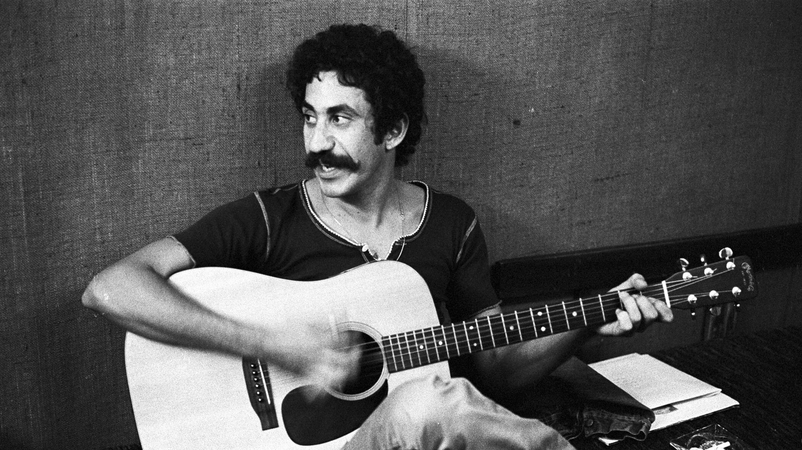

Check out this recent cover I did of "Take this Heart of Gold" by Watchhouse:
I've always loved country, western, and folk music. There's something timeless about the twang of a guitar, the heartfelt storytelling in the lyrics, and the raw authenticity that these genres bring to the table. Whether it's the dusty trails of the Old West evoked in classic country tunes or the introspective reflections found in folk ballads, there's a connection to the roots of American culture that resonates deeply with me. The melodies seem to capture the essence of life's highs and lows, painting vivid portraits of love, loss, and the beauty of everyday moments. Listening to these songs feels like coming home to a familiar, comforting embrace, reminding me of the simplicity and beauty in life's simplest pleasures.
Willie Nelson, Jim Croce and Chris Stapleton are my main musical inspirations. You've got to hear their stuff!
Brad's Top 10
- I'll Have to Say I Love You in a Song - Jim Croce
- Joy of My Life - Chris Stapleton
- Always on My Mind - Willie Nelson
- Time in a Bottle - Jim Croce
- Fire Away - Chris Stapleton
- Poncho and Lefty - Willie Nelson
- Operator - Jim Croce
- Red Headed Stranger - Willie Nelson
- It Takes a Woman - Chris Stapleton
- Walking Back to Georgia - Jim Croce